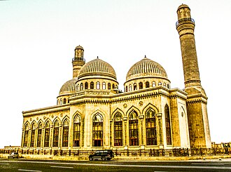

แนะนำ
La mosquée Bibi-Heybat est une mosquée chiite située à Bibi-Heybat, au sud de la baie de Bakou dans la Péninsule d'Abşeron (Azerbaïdjan). Le bâtiment actuel date des années 1990. Il s'agit d'une reconstruction, qui s'inspire fortement de la mosquée éponyme bâtie, elle, dans la seconde moitié du XIIIe siècle par le Chirvanshah Abu-l-Fath Farruhzad et complètement détruite par les bolcheviks en 1936, lors de répression de la religion qui a touché tout le territoire de l’URSS.
مسجد بيبي – هيبت هو أحد أبرز مساجد مدينة باكو عاصمة أذربيجان، شُيِّد البناء الأصلي خلال القرن الثالث عشر على يد الشروان شاه فروخ زاده الثاني، أمَّا المبنى الحالي فقد أُنشأ خلال عقد التسعينيَّات من القرن العشرين، بعد أن قام البلاشفة بهدم البناء الأصلي في سنة 1936م.
The Bibi-Heybat Mosque is located in the village of Bibiheybət, near Baku, Azerbaijan. The current structure, completed in the 1990s, replicates the original 13th-century mosque built at the behest of Iranian Shirvanshah Farrukhzad II Ibn Ahsitan II. The historic mosque was completely destroyed by the Bolsheviks in 1936. It is occasionally called "the Mosque of Fatima", which is how Alexandre Dumas referred to it during his visit in the 1850s. The mosque a holy site in Shia Islam.
Bibiheybet Camii Azerbaycan'ın başkenti Bakü'de bulunan tarihi bir cami. 13. yüzyılda Şirvanşah II. Ferruhzad tarafından inşa ettirilen yapı 1930'larda yıkılmıştır. Günümüzdeki yapı 1990'lı yıllarda inşa edilmiş olup eski caminin birebir kopyasıdır.
Masjid Bibi-Heybat adalah masjid bersejarah di Baku, Azerbaijan. Struktur yang ada, dibangun pada 1990-an, merupakan rekreasi masjid dengan nama yang sama yang dibangun pada abad ke-13 oleh Shirvanshah Farrukhzad II Ibn Ahsitan II, yang dihancurkan total oleh Bolshevik pada tahun 1936.
Die Bibi-Heybat-Moschee ist eine Moschee am Stadtrand von Baku, die ursprünglich im 13. Jahrhundert, in der Zeit des Schirwahshahs, nach Entwürfen des Architekten Mahmud ibn Saad errichtet wurde. Im Jahre 1936 wurde sie als erste religiöse Stätte in Baku während der Kampagne des militanten Atheismus unter Josef Stalin von Bolschewiki zerstört – wenig später folgte die monumentale Alexander-Newski-Kathedrale (Baku). Die nach der Schwester des achten schiitischen Imams ʿAlī ibn Mūsā ar-Ridā benannte Moschee wurde in den 1990er Jahren nach Entwürfen des Architekten Fachraddin Miralay wieder aufgebaut und durch Heydär Äliyev, den damaligen Präsidenten Aserbaidschans, am 11. Juli 1997 feierlich ihrer Bestimmung übergeben. Sie zählt somit zu den „wieder geborenen“ Gotteshäusern in den postsowjetischen Ländern. Die Bibi-Heybat-Moschee beherbergt das Grab der Heiligen Hökima Chanum, einer Tochte
La mezquita Bibi-Heybat es una mezquita histórica en Bakú, Azerbaiyán. La estructura actual construido en el año 1990 es una reconstrucción de la mezquita en el siglo XIII por el Shirvanshah Farrukhzad II Ibn Ahsitan II. La mezquita Bibi-Heybat es el centro espiritual para los musulmanes de la región y uno de los monumentos importantes de la arquitectura islámica en Azerbaiyán.
La Moschea Bibi-Heybat è una moschea storica di Baku, in Azerbaigian. La struttura esistente, costruita negli anni '90, è una ricreazione dell'omonima moschea costruita nel XIII secolo da Farrukhzad II Ibn Ahsitan II della dinastia degli Shirvanshah, che fu completamente distrutta dai bolscevichi nel 1936.
Мечеть Биби-Эйбат — шиитская мечеть, расположенная на берегу Бакинской бухты, в посёлке Биби-Эйбат в Азербайджане. Существующее ныне сооружение возведено в 1998—1999 годах на месте одноимённой мечети, построенной во второй половине XIII века ширваншахом Абу-л-Фатх Фаррухзадом, впоследствии неоднократно достраивавшейся и полностью разрушенной в 1936 году, во время «безбожной пятилетки», когда религия в СССР подверглась попытке полного искоренения.
บนแผนที่
เอกสารและลิงก์
- Wikipédia — Français
- Wikipédia — العربية
- Wikipédia — English
- Wikipédia — Türkçe
- Wikipédia — Bahasa Indonesia
- Wikipédia — Deutsch
- Wikipédia — Español
- Wikipédia — Italiano
- Wikipédia — Русский
- Wikidata — Q856262
ข้อมูล: วิกิสนเทศ (CC0) ปรับปรุงทุก 3 เดือน ปีที่แสดงคือปีที่สร้างอาคารเก่าที่สุดที่ทราบ: สำหรับอาคารที่กลายเป็นมัสยิดภายหลัง (เช่น ฮาเจียโซเฟีย) จะเป็นปีของอาคารเดิม ภาพถ่าย: วิกิมีเดียคอมมอนส์ ผู้ถ่ายและสัญญาอนุญาตอยู่ในหน้าของแต่ละภาพ